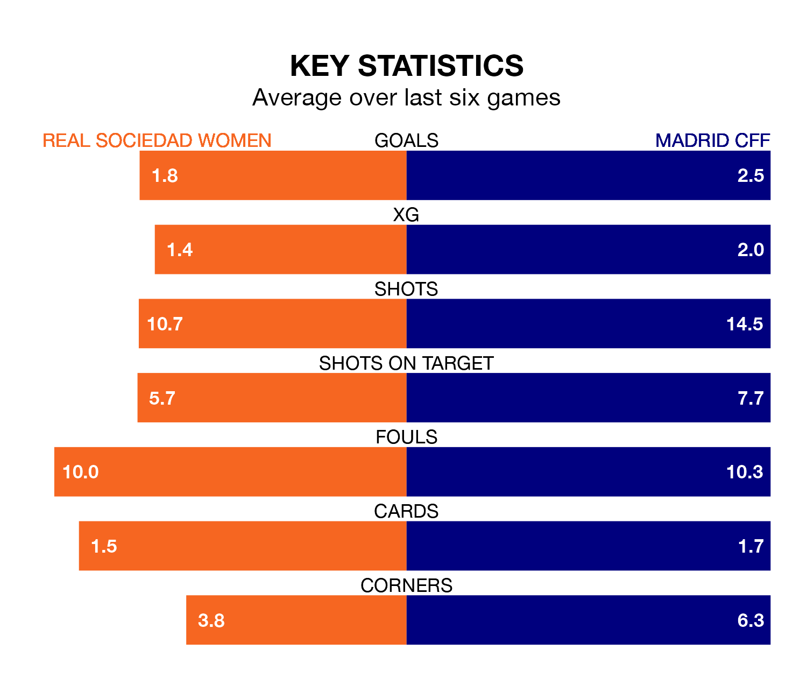

Madrid CFF are strong favourites to take all three points despite Real Sociedad Women's home advantage in Sunday's match at Instalaciones de Zubieta.
*Betting Company* are offering odds of 1.85 on Madrid CFF sealing the win, with the visitors sitting fourth in Primera Division Women table.
Sociedad Women, who are seventh in the league and nine points behind Madrid CFF, are priced at 2.88 to win. A draw is set at 3.3.
With 35 goals in 14 games so far this season, Madrid CFF are the league's second-highest scorers with 2.5 goals per game. And they are conceding at an average rate, letting in 22 goals at a rate of 1.6 per game.
Sociedad Women, meanwhile, are below average scorers, with 1.5 goals per game, compared to a league average of 1.6. They have conceded 1.7 goals per game.
In the last 10 years, Sociedad Women and Madrid CFF have played each other on 11 occasions. Sociedad Women won five of them, Madrid CFF four, and they drew twice.
On average, Sociedad Women scored 1.7 goals and Madrid CFF 0.9 in those matches.
Their last meeting was on February 5, when they played out a 2-2 draw.
In Synne Jensen, the hosts have one of the league's sharpest shooters so far this season. She has notched nine goals in 14 appearances, to sit third in the scoring charts.
Her goal rate of one every 114 minutes is quicker than that of Racheal Kundanaji, the away side's top scorer with a goal every 135 minutes, and a total of eight goals in 14 games.
Sociedad Women are in reasonable form in Primera Division Women, with three wins and two draws from their last six games.
With four wins and two losses over that period, Madrid CFF's form is slightly better – they have taken 12 points from 18, compared to Sociedad Women's 11.
Sociedad Women's last match was on January 20, a 2-0 win against Levante Las Planas, with Jensen and Sanni Franssi getting the goals for Sociedad Women.
Madrid CFF beat Real Betis Women 3-1 last time out, also on January 20, with Aida Esteve Quintero, Cristina Librán and Karen Araya on the scoresheet.
Updated: 09:07 (UTC), 24/01/24